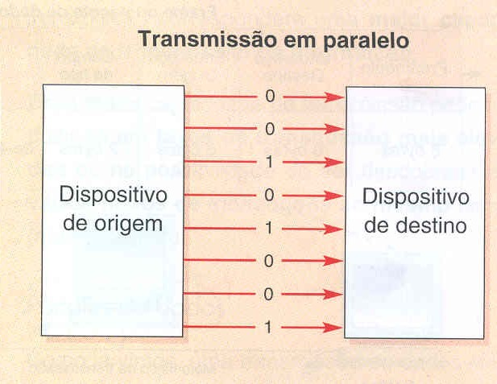

Modo de Transmissão Paralela

Neste modo, os bits que compoem as palavras dos dados precisa ser conduzido ao longo de um conjunto de vias, no qual cada via trabalha um bit de dado, como por exemplo os barramentos externos e internos dos microcomputadores, porém nesse modo paralelo são necessárias outras vias como a via "terra" para definir uma referência de tensão. Todavia, essa comunicação apenas ocorre de envio de um dos lados, no qual, para caso ocorra a necessidade de ser bidimensional será necessário mais vias. Desta forma, exemplos típicos de comunicação paralela são os computadores da IBMe sua respectiva necessidade de enviar dados para as impressoras, no qual eram enviados com uma sequencia de 8 bits paralelos de cada vez, apresentando desta maneira a vantagem particular que é a simplicidade no controle de dados. Sob essa ótica, é possível perceber que os dados enviados para a impressora por exemplo são muito mais rápidos do que a velocidade de impressão, ocasionando nesta forma na necessidade de um armazenamento de dados para uso futuro, sendo colocados no Buffer e indica para o computador quando o buffer está completo, evitando uma grande quantidade de dados seja enviado. Ademais, quando há o recebimento do dado pela própria impressora ela envia um "sinal de confirmação" denomidado de ACKLNG, ou seja, handshake bidirecional.Porém, no caso da IBM-PC a linha BUSY é utilizada para implementar um modo de comunicação em "polling". Isto significa que quando ele envia um dado ele fica em looping em espera até ser utilizado quando o sinal BUSY chegar a 0 |